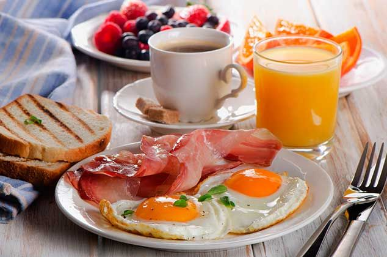
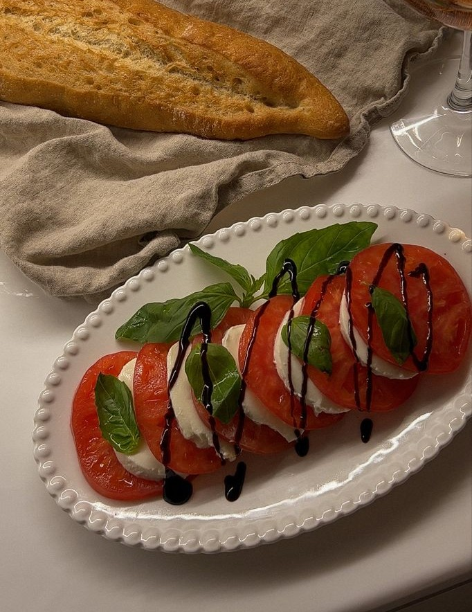

Comidas

Desayuno
Realiza diariamente el desayuno con alimentos frescos, integrales, variados, se asocia a un mejor rendimiento físico e intelectual.

Almuerzo
Las porciones del almuerzo deben adecuarse a cada persona, edad, actividad laboral y personal, clima, etc. Su distribución en el plato es la misma en adultos y niños.

Merienda
La merienda acorta el tiempo de ayuno entre el almuerzo y la cena, controlando el apetito y evitando así un consumo mayor de alimentos en la última comida del día.
Cena
Las porciones de la cena deben adecuarse a cada persona, edad, actividad laboral y personal, clima, etc. Su distribución en el plato es la misma en adultos y niños.